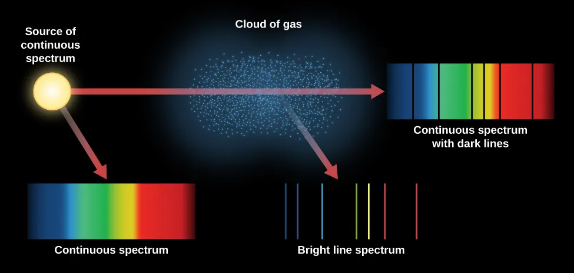

wavelength
ASTR 101 · Lecture 05
Light, Spectra, and Astronomical Evidence
Evidence, model, and quantitative reasoning
Learning Goals
- Explain why this lecture's central phenomenon matters: almost everything we know about distant objects arrives as light.
- Use the key model idea that light behaves as both wave and photon depending on the measurement.
- Apply the lecture's quantitative tool with units, assumptions, and a physical interpretation.
- Correct the misconception: Color alone is not a complete temperature measurement; filters, extinction, detector response, and calibration matter.
Reading anchor: OpenStax Astronomy 2e, Chapter 5.1-5.5 on light, spectra, atoms, blackbody radiation, and Doppler shifts.
Why This Question Matters
Kirchhoff, Bunsen, Fraunhofer, and later quantum physicists transformed astronomy by showing that spectra are physical fingerprints. After spectroscopy, stars became laboratories rather than just lights.
Opening Phenomenon
Almost everything we know about distant objects arrives as light. Spectra transform light from a picture into a physical measurement of temperature, composition, and motion.
First question: what is directly observed, and what part is an explanation built from a model?
Vocabulary for Reasoning
frequency
photon
blackbody
emission line
absorption line
Doppler shift
Use these terms to describe evidence and relationships, not as isolated vocabulary.
Evidence We Need to Explain
- Hot dense objects produce continuous spectra whose peak color depends on temperature.
- Thin gases emit or absorb light at characteristic wavelengths.
- Shifted spectral lines reveal radial motion.
Physical or Geometric Model
- Light behaves as both wave and photon depending on the measurement.
- Atoms have quantized energy levels, producing diagnostic line spectra.
- A spectrum must be calibrated before line position or intensity can be trusted.
Quantitative Tool
\[ c = \lambda\nu \qquad \text{and} \qquad \frac{\Delta\lambda}{\lambda_0} \approx \frac{v_r}{c} \]
A line shift is meaningful only after identifying the rest wavelength and preserving the sign of the shift.
Worked Example
- A line with rest wavelength 656.3 nm observed at 657.0 nm is redshifted.
- The fractional shift is 0.7/656.3, about 0.00107.
- The radial speed is therefore about 320 km/s away from the observer.
The answer should identify redshift or blueshift, compute the speed, and interpret the direction of motion.
Visual Reasoning
Treat the schematic as a path from photon measurement to physical interpretation: wavelength, energy, line identity, and motion.
- Which features are continuum light?
- Which features encode atomic transitions?
- How would motion shift the line positions?

Common Misconception
Color alone is not a complete temperature measurement; filters, extinction, detector response, and calibration matter.
Correct it by naming calibration, extinction, filters, and detector response as parts of color measurement.
Active Learning Segment
Students classify three spectra as continuous, emission, or absorption and state what physical situation could produce each.
Write a prediction first, compare reasoning with a neighbor, then revise your answer in one sentence.
Lab or Observing Connection
Lab 04 uses spectra to infer composition and motion with explicit uncertainty. Your analysis should connect line positions and patterns to composition or motion.
Synthesis
Spectroscopy is astronomy's remote laboratory: it links photons to matter, motion, and physical conditions.
- Which spectral features diagnose temperature, composition, and motion?
- What calibration does a spectrum need?
- What physical claim can the data support?
References and Visual Credits
- OpenStax, Astronomy 2e: OpenStax Astronomy 2e, Chapter 5.1-5.5 on light, spectra, atoms, blackbody radiation, and Doppler shifts.
- Local reference copy:
references/openstax-astronomy-2e.pdf. - Visual: Continuous, absorption, and emission spectra depend on source geometry and gas excitation. Credit: OpenStax Astronomy 2e, Fig. 5.21, CC BY-NC-SA 4.0.